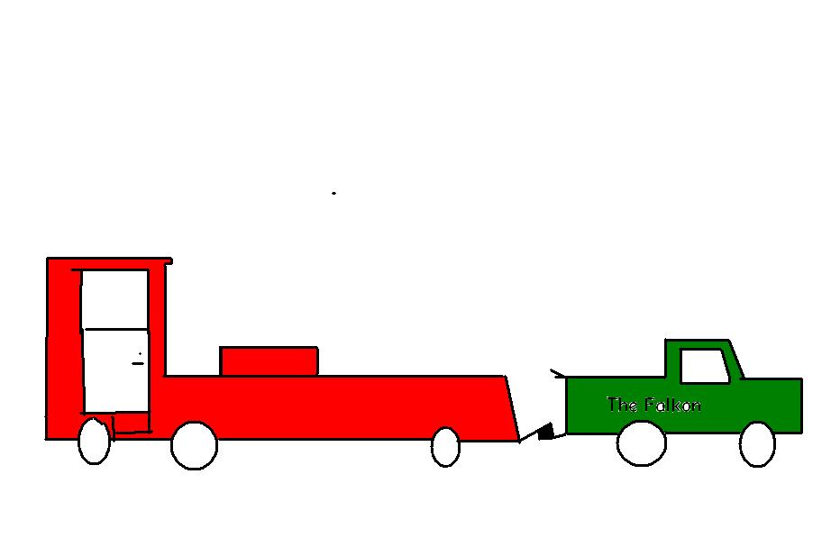

Truck Pulls!
by: Hunter L
Back To HTML Page
Go To Truck Pull information
I`ve been to a lot of Truck Pulls. They are really fun. I go to a couple of them
each summer. I go there with my dad. Sometimes we go to Truck Pulls with my dads
friends. We eat supper there then watch the Truck Pulls.If you google Truck Pulls there
are videos and pictures.

Sometimes my dad and I take the Harley to the Truck Pulls. My dad and I love to go to
the Truck Pulls. They are really fun. Trust me I`ve been to a lot of them. My dads friend
and his dad are in some Truck Pulls. They do really good. There are some tractorpulls to.
Some tractors have 3 jet engines!And I think there are trucks with a couple of v8`s! Truck
Pulls are very popular. They have Truck Pulls all over the United States. Maybe you could ask your dad to take you to a Truck Pull they are a blast and if you go to 1 bring ear plugs its really loud! Truck Pulls go for a little bit so you might be up for a while. Truck Pulls are on T.V. somtimes to so check your channels if your intrested.